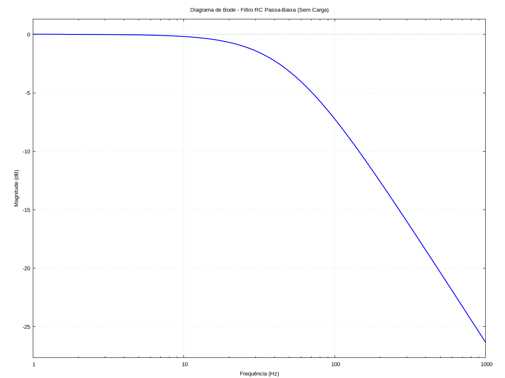
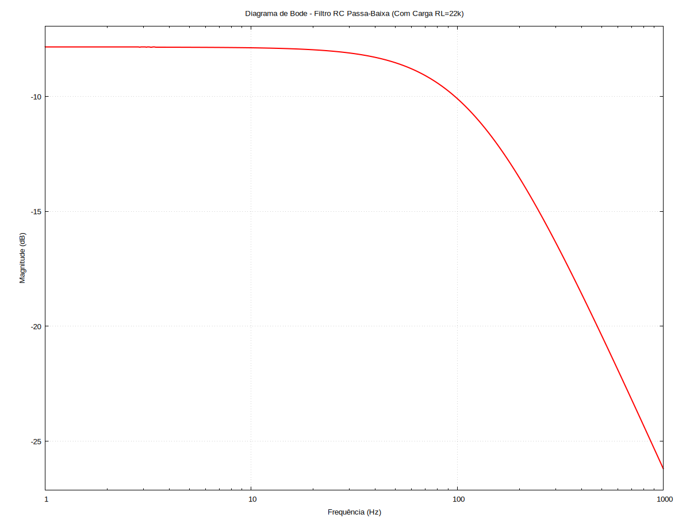
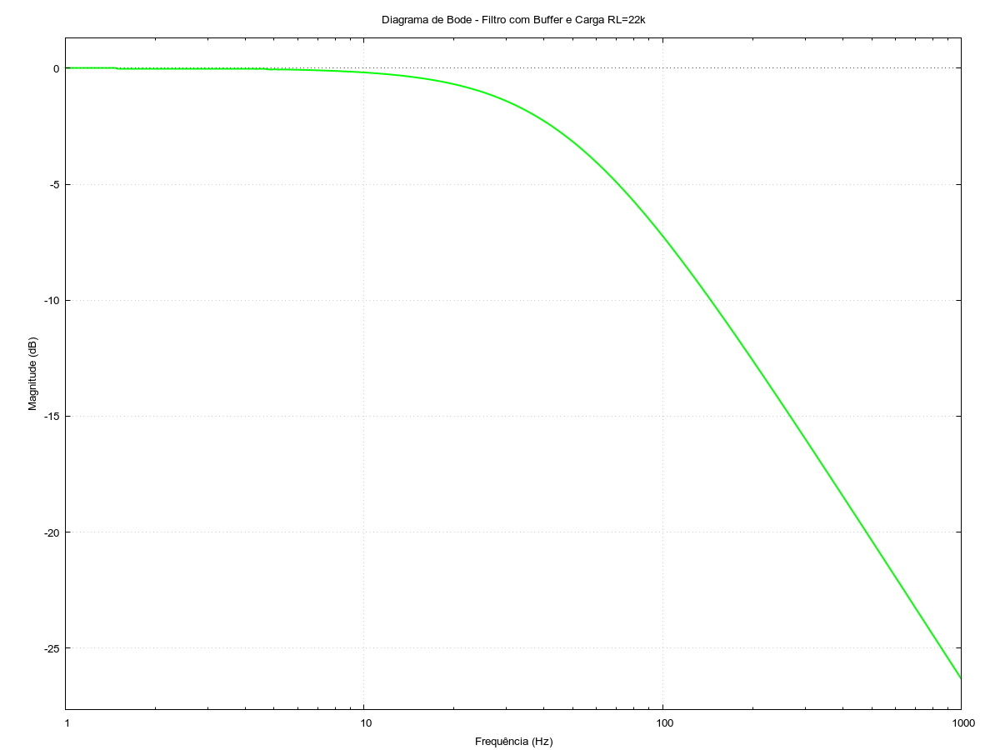

\( \DeclareMathOperator{\abs}{abs} \newcommand{\ensuremath}[1]{\mbox{$#1$}} \)
ROTEIRO 04 - CIRCUITOS 2
1 ANÁLISE TEÓRICA
1.1 CIRCUITO 01
1.1.1 EQUAÇÃO QUE REGE O CIRCUITO
| --> |
/* ========================================================================= EL216 - CIRCUITOS 2 | PRÁTICA 4 - PRIMEIRO CIRCUITO (Filtro RC sem carga) ========================================================================= */ /* 1. PREPARAÇÃO DO AMBIENTE */ kill(all)$ /* Limpa a memoria para evitar conflitos com variaveis antigas */ assume(w > 0, R > 0, C > 0, f > 0)$ /* Define que os componentes sao reais e positivos */ /* 2. CONVERSÃO PARA FREQUÊNCIA E EQUAÇÕES QUE O REGEM */ /* Definimos as impedancias no dominio de Laplace (s) */ Z_R : R$ Z_C : 1/(s·C)$ /* A tensao de saida eh tomada sobre o capacitor. Equacao do Divisor de Tensao: Vo = Vi * (Z_C / (Z_R + Z_C)) */ /* 3. RESOLUÇÃO E FUNÇÃO DE TRANSFERÊNCIA H1(s) */ H1_s : Z_C / (Z_R + Z_C)$ H1_simp : ratsimp(H1_s); /* Comando que simplifica e entrega a funcao de transferencia */ /* 4. FREQUÊNCIA DE CORTE E GANHO DO FILTRO (TEORIA) */ /* O Ganho DC ocorre em frequencias nulas (s = 0) */ Ganho_Teorico : subst(s=0, H1_simp); /* A frequencia de corte angular ocorre em w = 1/RC. Como w = 2*pi*f, a frequencia de corte em Hertz eh: */ fc_teorico : 1 / (2·%pi·R·C)$ /* 5. (LAB) PROJETO DO FILTRO (fc = 50 Hz, C = 100 nF) */ /* Queremos descobrir R. Vamos resolver a equacao teorica para a variavel R */ eq_projeto : fc_desejada = 1 / (2·%pi·R·C_lab)$ R_isolado : solve(eq_projeto, R)$ /*===========================================*/ /* Criamos uma lista com os valores requeridos pelo roteiro. Se quiser testar outros valores depois, mude APENAS NESTA LISTA: */ valores_projeto : [fc_desejada = 50, C_lab = 100e-9]$ /*===========================================*/ /* Calculamos o valor exato do resistor usando os valores da lista e pedimos numero decimal (, numer) */ R_exato_num : ev(R_isolado, valores_projeto, numer); /* 6. (LAB) ESCOLHA DO VALOR COMERCIAL E RECALCULO */ /* O calculo acima resulta em aproximadamente 31831 Ohms (31.8 kOhms). O valor comercial mais proximo na gaveta do laboratorio (serie E24) costuma ser 33 kOhms. Pode alterar a variavel abaixo caso tenha um de 30k ou use potenciometro. */ R_comercial : 33e3$ /* Recalculamos a nova frequencia de corte real com o resistor comercial */ fc_real : ev(fc_teorico, [R = R_comercial, C = 100e-9], numer); /* 7. (LAB) DIAGRAMA DE BODE DE MAGNITUDE */ /* Para Bode, primeiro trocamos 's' por 'j*w' (%i*w) na funcao simplificada */ H1_jw : subst(s = %i·w, H1_simp)$ /* Tiramos o modulo/magnitude e simplificamos as raizes */ Magnitude : ratsimp(cabs(H1_jw))$ /* Convertemos o Ganho para decibeis (dB) e trocamos w por 2*pi*f para plotar no eixo de Hertz */ Mag_dB : 20 · log( subst(w = 2·%pi·f, Magnitude) ) / log(10)$ /* Substituimos os nossos componentes comerciais na expressao de plotagem */ Mag_plot : ev(Mag_dB, [R = R_comercial, C = 100e-9])$ /* Plota o Grafico de Bode (Magnitude) usando escala logaritmica no eixo X (frequencias de 1 a 1000 Hz) */ wxplot2d( Mag_plot, [f, 1, 1000], [logx], [xlabel, "Frequência (Hz)"], [ylabel, "Magnitude (dB)"], [title, "Diagrama de Bode - Filtro RC Passa-Baixa (Sem Carga)"], [style, [lines, 2, blue]], [grid2d, true] ); |
\[\]\[\tag{1\_ sim} \frac{1}{C R s\mathop{+}1}\]
\[\]\[\tag{anho\_ Teoric} 1\]
\[\]\[\tag{\_ exato\_ nu} \left[ R\mathop{=}31830.98861837907\right] \]
\[\]\[\tag{c\_ rea} 48.22877063390768\]
\[\]\[\tag{%t18} \]

\[\]\[\tag{%o18} \]
1.2 CIRCUITO 02
| --> |
/* ========================================================================= EL216 - CIRCUITOS 2 | PRÁTICA 4 - SEGUNDO CIRCUITO (Filtro RC com Carga) ========================================================================= */ /* 1. PREPARAÇÃO DO AMBIENTE */ kill(all)$ assume(w > 0, R > 0, C > 0, RL > 0, f > 0)$ /* 2. CONVERSÃO PARA FREQUÊNCIA E EQUAÇÕES QUE O REGEM */ /* Definimos as impedancias no dominio de Laplace (s) */ Z_R : R$ Z_C : 1/(s·C)$ Z_RL : RL$ /* Como a carga esta em paralelo com o capacitor, calculamos a impedancia equivalente (Z_p) */ Z_p : (Z_RL · Z_C) / (Z_RL + Z_C)$ /* A tensao de saida eh sobre essa associacao paralela. Aplicamos o divisor de tensao: */ /* 3. RESOLUÇÃO E FUNÇÃO DE TRANSFERÊNCIA H2(s) */ H2_s : Z_p / (Z_R + Z_p)$ H2_simp : ratsimp(H2_s); /* Entrega a funcao: RL / (s*C*R*RL + R + RL) */ /* 4. FREQUÊNCIA DE CORTE E GANHO DO FILTRO (TEORIA) */ /* Ganho DC ocorre em frequencias nulas (s = 0) */ Ganho_Teorico : ratsimp(subst(s=0, H2_simp)); /* A resistencia equivalente vista pelo capacitor eh o paralelo entre R e RL: Req = (R*RL)/(R+RL). A frequencia de corte teorica eh fc = 1 / (2*pi*Req*C). Colocando no formato matematico deduzido anteriormente: */ fc_teorico : (R + RL) / (2·%pi·R·RL·C)$ /* 5. (LAB) ANÁLISE COM OS VALORES REAIS */ /* Definimos a lista com os componentes do lab. Lembre-se de colocar o valor comercial de R que voce escolheu no Circuito 1! */ valores_lab2 : [R = 32.314e3, C = 100e-9, RL = 22e3]$ /* Avaliamos numericamente o Ganho do circuito 2 */ Ganho_num : ev(Ganho_Teorico, valores_lab2, numer); /* Avaliamos numericamente a nova Frequencia de Corte */ fc_num : ev(fc_teorico, valores_lab2, numer); /* 6. (LAB) DIAGRAMA DE BODE DE MAGNITUDE */ /* Trocamos 's' por 'j*w' na funcao simplificada */ H2_jw : subst(s = %i·w, H2_simp)$ /* Tiramos o modulo/magnitude */ Magnitude : ratsimp(cabs(H2_jw))$ /* Convertemos para dB e mudamos w para 2*pi*f */ Mag_dB : 20 · log( subst(w = 2·%pi·f, Magnitude) ) / log(10)$ /* Substituimos nossos componentes reais na equacao para conseguir plotar o grafico */ Mag_plot : ev(Mag_dB, valores_lab2)$ /* Plota o Grafico de Bode (Magnitude) em escala logaritmica. Note que o grafico agora começara em um valor negativo de dB (devido a atenuacao do divisor resistivo) e a frequencia de corte estara mais alta que a do circuito 1. */ wxplot2d( Mag_plot, [f, 1, 1000], [logx], [xlabel, "Frequência (Hz)"], [ylabel, "Magnitude (dB)"], [title, "Diagrama de Bode - Filtro RC Passa-Baixa (Com Carga RL=22k)"], [style, [lines, 2, red]], [grid2d, true] ); |
\[\]\[\tag{2\_ sim} \frac{\ensuremath{\mathrm{RL}}}{C R\, \ensuremath{\mathrm{RL}} s\mathop{+}\ensuremath{\mathrm{RL}}\mathop{+}R}\]
\[\]\[\tag{anho\_ Teoric} \frac{\ensuremath{\mathrm{RL}}}{\ensuremath{\mathrm{RL}}\mathop{+}R}\]
\[\]\[\tag{anho\_ nu} 0.4050521044297971\]
\[\]\[\tag{c\_ nu} 121.5957842518751\]
\[\]\[\tag{%t17} \]

\[\]\[\tag{%o17} \]
1.3 CIRCUITO 03
| --> |
/* ========================================================================= EL216 - CIRCUITOS 2 | PRÁTICA 4 - TERCEIRO CIRCUITO (Filtro + Buffer + RL) ========================================================================= */ /* 1. PREPARAÇÃO DO AMBIENTE */ kill(all)$ assume(w > 0, R > 0, C > 0, RL > 0, f > 0)$ /* 2. CONVERSÃO PARA FREQUÊNCIA E EQUAÇÕES DO CIRCUITO COM AMPOP */ /* Definimos as impedancias */ Z_R : R$ Z_C : 1/(s·C)$ /* Pela teoria do Ampop Ideal, a entrada nao-inversora (V+) nao drena corrente. Logo, a tensao nela eh a mesma do divisor de tensao original do filtro RC: */ V_mais : Z_C / (Z_R + Z_C)$ /* Na configuracao de buffer (seguidor de tensao), a saida (V_o) eh realimentada direto na entrada inversora (V-), e o ampop forca V- = V+. Portanto, a tensao de saida eh exatamente igual a tensao V+: */ /* 3. RESOLUÇÃO E FUNÇÃO DE TRANSFERÊNCIA H3(s) = V_o / V_i */ H3_s : V_mais$ H3_simp : ratsimp(H3_s); /* Entrega a funcao: 1 / (s*C*R + 1) */ /* 4. FREQUÊNCIA DE CORTE E GANHO DO CIRCUITO (TEORIA E COMPARAÇÃO) */ /* Ganho DC ocorre em frequencias nulas (s = 0) */ Ganho_Teorico : ratsimp(subst(s=0, H3_simp)); /* A frequencia de corte volta a depender apenas do filtro isolado */ fc_teorico : 1 / (2·%pi·R·C)$ /* 5. (LAB) ANÁLISE COM OS VALORES REAIS */ /* Definimos a lista com os mesmos componentes do lab. Repare que RL = 22k esta na lista, mas a matematica mostrara que ele nao afeta o filtro! */ valores_lab3 : [R = 33e3, C = 100e-9, RL = 22e3]$ /* Avaliamos numericamente. O ganho voltara a ser 1 e fc voltara a ser ~48.2 Hz */ Ganho_num : ev(Ganho_Teorico, valores_lab3, numer); fc_num : ev(fc_teorico, valores_lab3, numer); /* 6. (LAB) DIAGRAMA DE BODE DE MAGNITUDE */ /* Trocamos 's' por 'j*w' na funcao simplificada */ H3_jw : subst(s = %i·w, H3_simp)$ /* Tiramos o modulo/magnitude */ Magnitude : ratsimp(cabs(H3_jw))$ /* Convertemos para dB e mudamos w para 2*pi*f */ Mag_dB : 20 · log( subst(w = 2·%pi·f, Magnitude) ) / log(10)$ /* Substituimos nossos componentes reais na equacao para plotar */ Mag_plot : ev(Mag_dB, valores_lab3)$ /* Plota o Grafico de Bode (Magnitude). O grafico sera IDENTICO ao do Circuito 1, comprovando visualmente que o buffer eliminou o problema de carregamento que tivemos no Circuito 2! */ wxplot2d( Mag_plot, [f, 1, 1000], [logx], [xlabel, "Frequência (Hz)"], [ylabel, "Magnitude (dB)"], [title, "Diagrama de Bode - Filtro com Buffer e Carga RL=22k"], [style, [lines, 2, green]], [grid2d, true] ); |
\[\]\[\tag{%o6} \frac{1}{C R s+1}\]
\[\]\[\tag{%o7} 1\]
\[\]\[\tag{%o10} 1\]
\[\]\[\tag{%o11} 48.22877063390768\]
\[\]\[\tag{%t16} \]

\[\]\[\tag{%o16} \]
2 MEDIÇÕES LABORATÓRIO - [ 26/05/26]
2.1 Dados - Circuito 1:
2.2 Dados - Circuito 2:
2.3 Dados - Circuito 3:
Created with wxMaxima.
The source of this Maxima session can be downloaded here.